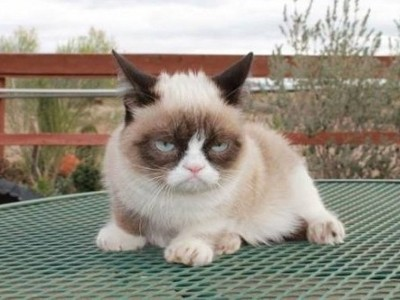
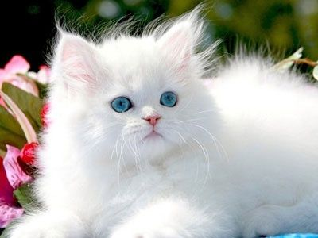
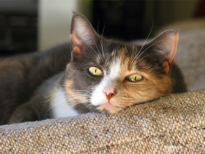
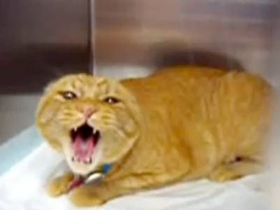
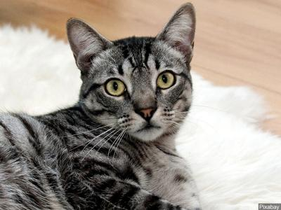
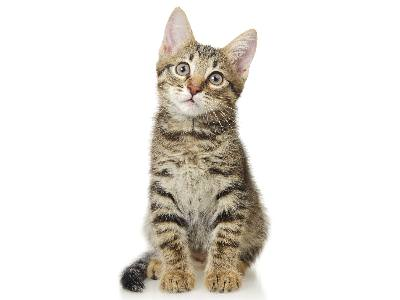
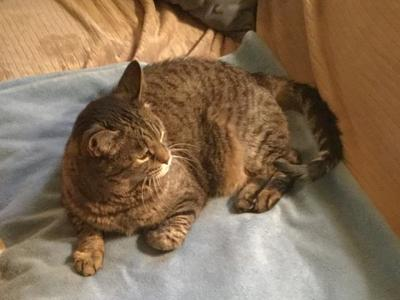
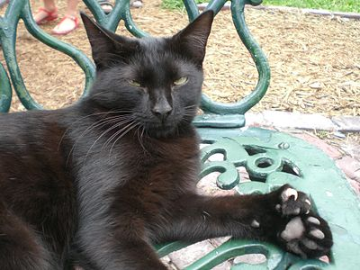
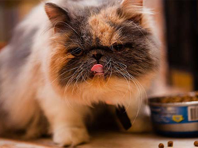
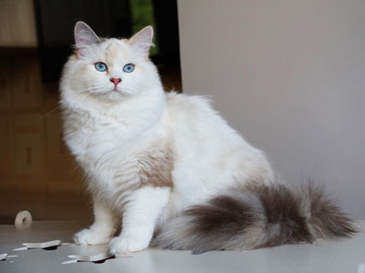

ВасабиВасабиВасабиВасабиВасабиВасабиВасабиВасабиВасабиВасабиВасабиВасабиВасабиВасабиВасабиВасабиВасабиВасабиВасабиВасабиВасабиВасабиВасабиДобродушный, общительный и игривыйВозраст: 4 годаПорода: мэнксБолезни: нетСтатус: пристроенОчень ласковый, любит посидеть и поспать на коленях,
отлично ладит с большим количеством домашних и другими питомцами. Отличный прыгун, для
него доступны даже самые высокие места в доме

ГризлиХарактер стойкий, нордическийВозраст: 7 летПорода: сноу-шуБолезни: нетСтатус: ищет хозяинаСпокойный, в меру ласковый и активный, не склонен к
лазанью и прыжкам. С удовольствием купается и играет с водой, легко переносит
одиночество, быстро усваивает новое и хорошо поддается дрессировке

Принцесса Настоящая леди, любит ласкуВозраст: 5 месяцевПорода: турецкая ангораБолезни: нетСтатус: ищет хозяинаГрациозная пушистая красавица, очень интеллектуальна
и любознательна, старается быть в центре внимания, не любит долго оставаться одна.
Привязчива, предпочитает одного хозяина

МауглиХитрый, умный, изобретательныйВозраст: 1 годПорода: нетБолезни: нетСтатус: ищет хозяина Ловкий, смелый и умелый, прирожденный охотник,
пусть даже в каменных джунглях. Гиперактивный, требует большую площадь для игр, бегает
за всем, что жужжит, пищит и просто шевелится. Никому не позволит заскучать!

ГреночкаЛаскова, нежна и очень общительнаВозраст: 2 годаПорода: калифорнийская сияющаяБолезни: нетСтатус: ищет хозяинаУмна и интеллигентна, но немного застенчива. Нужно
время, чтобы познакомиться с ней поближе, но дайте ей к себе привыкнуть - и компаньона
лучше уже не найти! Любит спокойный отдых, очень лояльна к детям и другим животным

Мискузи Любознательный и неутомимыйВозраст: 10 месяцевПорода: нетБолезни: нетСтатус: пристроенОбожает своего хозяина, может часами проводить время
в кругу семьи и поддерживать разговор задорным мяуканьем. Шаловлив, готов развлекаться с
любыми игрушками, но особенно любит мячики и палочки с перьями

СандэйСпокойный, уравновешенный, сдержанныйВозраст: 5 летПорода: нетБолезни: нетСтатус: пристроенНе любит подвижные игры, отлично подойдет любителям
скоротать время на диване. Очень ласковый и неконфликтный, любит прикосновения и
почесывания. Склонен к ожирению, необходимо следить за весом и питанием

БагираСамостоятельная, умная и игриваяВозраст: 2,5 годаПорода: мейн-кунБолезни: нетСтатус: ищет хозяинаНесмотря на свою серьезную и суровую внешность,
Багира добродушна и общительна. Очень любит воду и купания, расчесывания и уход. С
удовольствием составит компанию не только дома, но и на прогулке или за городом.

РокфорНастоящий аристократ: своенравен и упрямВозраст: 6 летПорода: персидскийБолезни: нетСтатус: ищет хозяинаРокфор - истинный домосед, миролюбив, но обладает
независимым характером и не поддается дрессировке. Самодостаточен, всегда найдет, чем
себя занять, а потому отлично подойдет редко бывающим дома. Из-за своей длинной густой
шерсти нуждается в регулярном вычесывании и купании.

ВанессаИнтеллигентная кошка, своенравнаВозраст: 2 годаПорода: турецкий ванБолезни: нетСтатус: ищет хозяинаОчень энергичная и активная, любит подвижные игры и
купания. Легко сходится с другими домашними животными, сильно привязывается к одному
человеку. С радостью участвует в дрессировке, любит компанию, в одиночестве скучает.